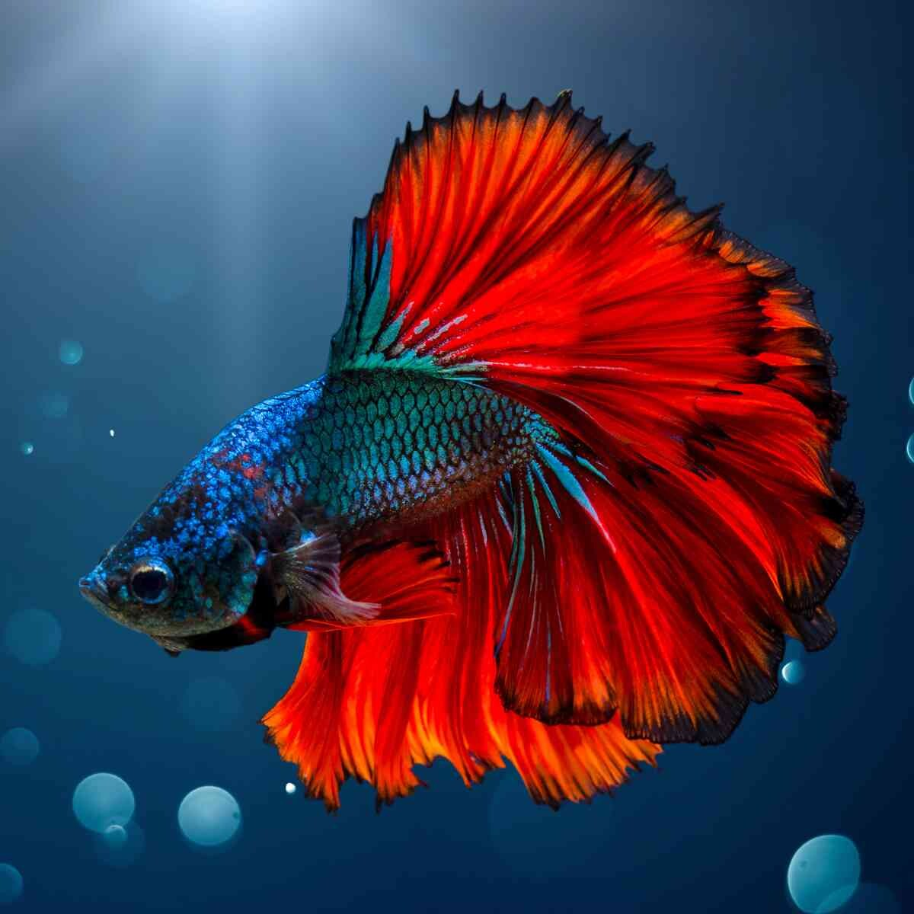

Süßwasserzierfische
Willkommen auf unserer Webseite über Süßwasserzierfische! Hier finden Sie Informationen über verschiedene Arten von Süßwasserfischen, ihre Lebensräume und Pflegehinweise.

Siamesische Kampffisch
- Aussehen: Klein, bunt, Männchen meist farbenprächtiger; große Schwanzflosse
- Vorkommen: Ursprünglich in Südamerika und der Karibik
- Aquarium: Pflanzen, Verstecke und genügend Schwimmraum;
Wassertemperatur ca. 22–26 °C;
Haltung in Gruppen - Nahrung: Flocken- und Granulatfutter, Wasserflöhe und Artemia
Meine Bewertung
⭐⭐⭐⭐⭐
Möchten Sie mehr über andere Zierfische erfahren?
Hier klicken